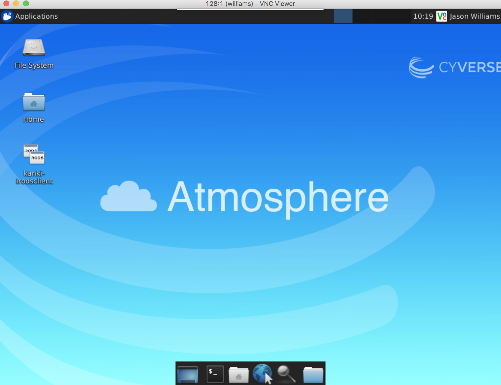

Connecting to an Instance¶
Once your instance is in the 'Active' state, you can connect to the instance. All instances support connection at the command line via SSH. Many (but not all) instances may also have a graphical desktop. You can connect to these desktops via a VNC viewing client. We will cover both methods in this guide.
Connect to Atmosphere Instance using SSH¶
Connecting using Mac or Linux Terminal¶
-
If necessary, login to and locate the instance you are connecting to in a given project.
-
Locate the IP address and copy this to your clipboard.
-
Open your computer's terminal application.
-
Connect via SSH:
$ ssh your_cyverse_username@your.atmosphere.ip.address # If connecting for the first time, you may be get a security prompt The authenticity of host \'128.196.64.200 (128.196.64.200)\' can\'t be established. ECDSA key fingerprint is SHA256:fzEJLqeljHgIwcGY0gUap2sRWLlGPQwUVimhEgkJYBs. Are you sure you want to continue connecting (yes/no)? # you may accept this prompt by typing yes -
You will be prompted to enter your CyVerse password
Tip
Your cursor will not move or indicate you are typing as you enter your password. If you make a mistake, hit enter and you will be prompted again.
You should now be connected to your Atmosphere instance.
Connecting using Windows and PuTTY¶
-
If necessary, login to and locate the instance you are connecting to in a given project.
-
Locate the IP address and copy this to your clipboard.
-
Open 'PuTTY.exe' and paste the IP address into the 'Host Name (or IP address s)' field; click 'Open'.
Note
If this is your first time connecting, you may get a security prompt that the server's host key is not cached in the registry. You may click 'Yes' to continue connecting.
-
When prompted, enter your CyVerse username for the request to 'login as:' and enter your CyVerse password to connect.
Tip
Your cursor will not move or indicate you are typing as you enter your password. If you make a mistake, hit enter and you will be prompted again.
Connect to Atmosphere Instance using VNC viewer¶
Note
You can only connect to an Atmosphere instance that has a desktop installed and has a running VNC server. Usually this information is in the image description. If you are unsure, or having difficulty in connecting to and instance you believe should have a desktop, contact Atmosphere support. If you have not already done so, download Real VNC Viewer.
- If necessary, login to Atmosphere and locate the instance you are connecting to in a given project.
- Locate the IP address and copy this to your clipboard.
-
Open VNC Viewer. Paste your IP address + ":1" in the 'VNC Server' field (e.g. 161.803.39.887:1) and click connect.
Note
When connecting for the first time to an instance, you will be prompted to save a signature 4. When prompted, ensure your username entered is your CyVerse username. Enter your CyVerse password and click Ok.
You should now be connected to your instance desktop. 
Fix or improve this documentation
- Search for an answer: CyVerse Learning Center
- Ask us for help: click on the lower right-hand side of the page
- Report an issue or submit a change: GitHub Repo Link
- Send feedback: learning@CyVerse.org